Clicando no , abrirá automaticamente o Google Maps do seu celular com a localização desejada. É necessário que você tenha instalado o Google Maps no seu dispositivo.
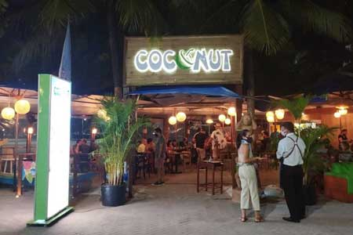
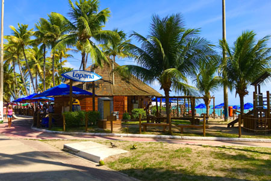
Coconut
Bairro: Pajuçara
Restobar repleto de petiscos e pratos, com foco em frutos do mar, além de drinques e cervejas, em kioske praiano.
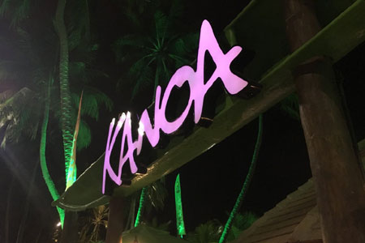
Kanoa Beach Bar
Bairro: Ponta Verde
Cervejas, sucos e frutos do mar, em quiosque de praia com canoa de madeira, telhado de palha e música ao vivo.
Lopana
Bairro: Ponta Verde
Petiscos e pratos, com foco em frutos do mar, além de drinques e cervejas, em ambiente rústico e praiano.
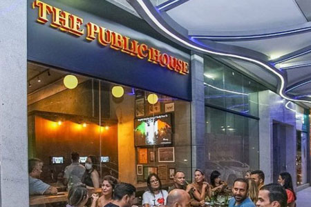
The Public House - Irish Pub
Bairro: Ponta Verde
Foto: Divulgação/Instagram
PUB estilo Irlandês.
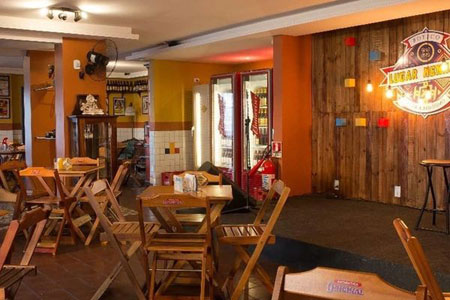
Boteco Lugar Nenhum
Bairro: Jatiúca
Foto: Divulgação
Bar descontraído que serve porções mistas e lanches da casa com coquetéis chamativos ao som de banda popular.
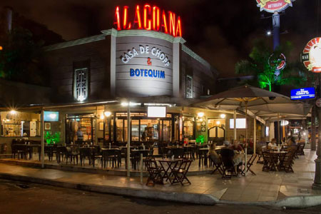
Alagoana Bar e Botequim
Bairro: Jatiúca
Foto: Divulgação/Facebook
Petiscos e pratos fartos, chope espumoso e drinques variados, em clima tranquilo para bate-papo com amigos.
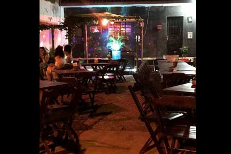
El Porteño Pub
Bairro: Jatiúca
Bar argentino aconchegante e alternativo, conta com espaço ao ar livre e um menu que entre outras receitas, contempla as deliciosas empanadas, além de uma extensa lista de drinks e cervejas artesanais.
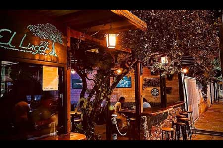
El Lugar
Bairro: Jatiúca
Coquetéis especiais e comidas argentinas, num espaço rústico e descontraído, com mesas externas debaixo de uma árvore.
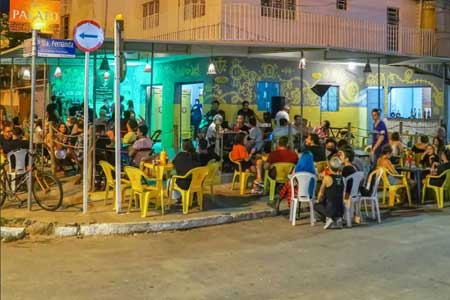
Casa Amarela
Bairro: Jatiúca
Referência do circuito alternativo, é a escolha certa para quem busca simplicidade e bons petiscos.
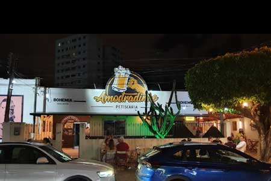
Amostradinho Petiscaria
Bairro: Jatiúca
A Petiscaria mais Amostrada de Maceió.
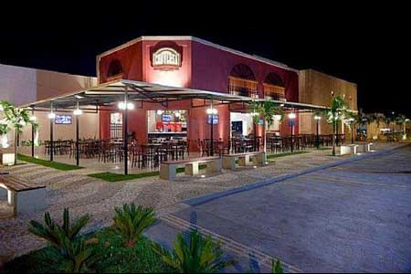
Conversa Botequim
Bairro: Jatiúca
Iguarias típicas da gastronomia de boteco, carnes e variedade de bebidas, além de música ao vivo e ar boêmio.
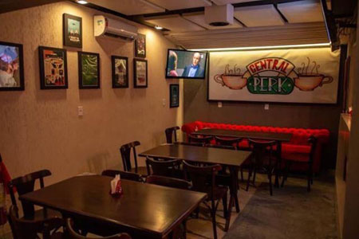
The Spoilers Bar
Bairro: Jatiúca
Bar temático de séries e filmes, ótimo lugar para os amantes da cultura geek e boa música.
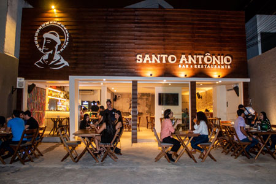
Santo Antônio Bar e Restaurante
Bairro: Jatiúca
Foto: Divulgação/Facebook
Petiscos e pratos fartos, chope espumoso e drinques variados, em clima tranquilo para bate-papo com amigos.
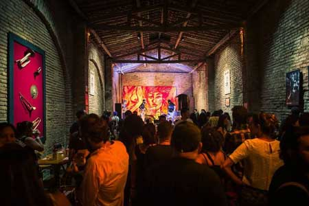
Rex Jazz Bar
Bairro: Jaraguá
Jazz e outros shows ao vivo, além de coquetéis, em espaço aconchegante com iluminação baixa e tijolo aparente.
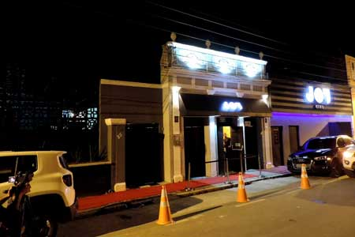
Joy Club
Bairro: Jaraguá
Balada e casa de shows onde todxs se encontram.
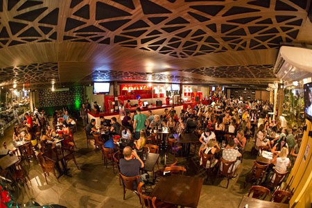
Choparia MAIKAI
Bairro: Jatiúca
Foto: Divulgação/Tripadvisor
Gastrobar convidativo animado por bandas festivas, tem um menu gourmet variado de porções mistas e coquetéis. Há uma casa de shows anexa como o mesmo nome.